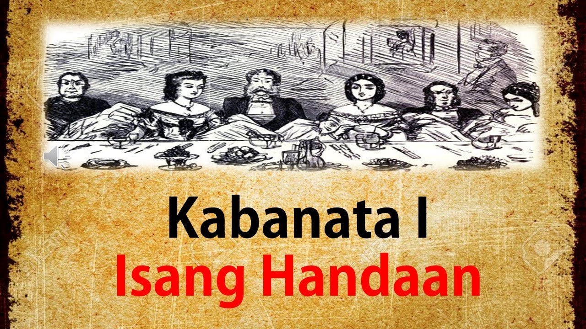
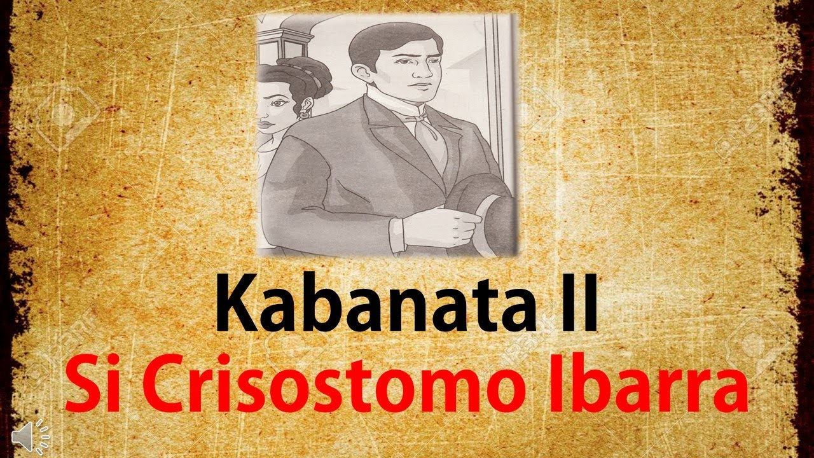
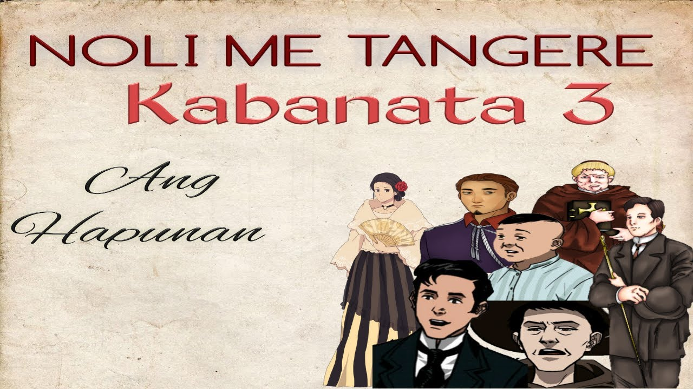
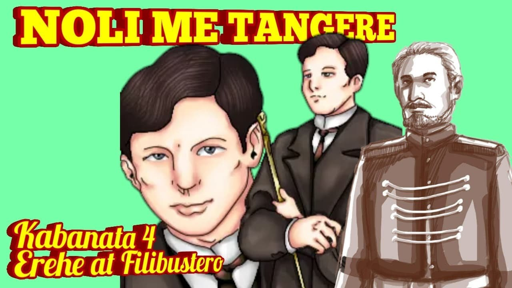
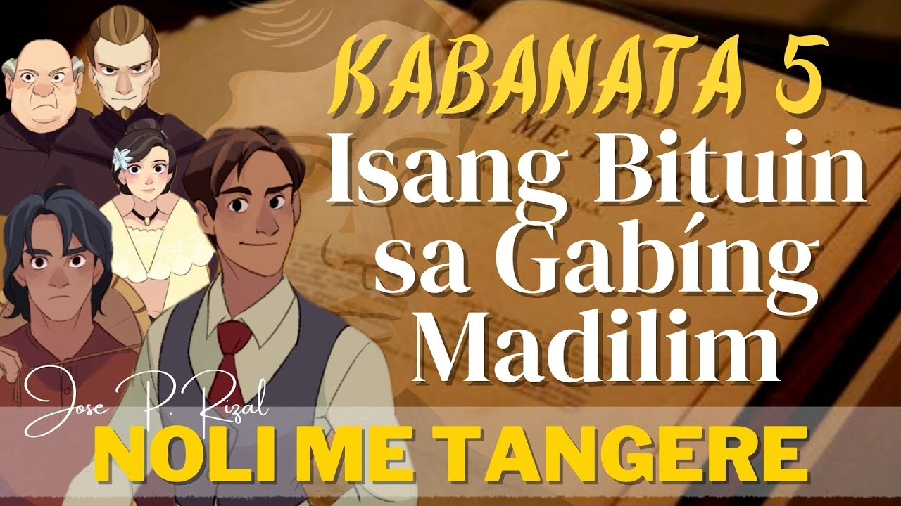

Noli Me Tángere
Kabanata I
ISANG PAGCACAPISAN

Sa kabanatang ito, naglalarawan si Rizal ng pagbabalik ni Crisostomo Ibarra sa Pilipinas matapos ang pitong taon niyang pag-aaral sa Europa. Bumalik siya upang ipagpatuloy ang kanyang mga pangarap para sa kanyang bayan. Nang dumating siya sa Maynila, dinala siya ni Don Rafael Ibarra, ang kanyang ama, sa bahay ng kanilang kaibigan na si Kapitan Tiago. Dito, ginanap ang isang malaking salu-salo sa kanyang pagbabalik.
Sa salu-salo, ipinakita ang kalagayan ng mga mayayamang Espanyol at mga Pilipinong elitista na nagmula sa mga panginoong maylupa at nasa malalayong lalawigan ng Pilipinas. Sa kabila nito, ipinakita rin ni Rizal ang kahirapan at paghihirap ng mga magsasaka at karaniwang mamamayan.
Sa salu-salo, nakilala ni Ibarra ang ilang mga tauhan na magiging mahalagang bahagi ng kwento, tulad ni Padre Damaso, ang paring Franciscan na kilala sa kanyang malupit na pagtrato sa mga Pilipino, at Maria Clara, ang anak ni Kapitan Tiago na nagustuhan ni Ibarra. Natuklasan din ni Ibarra na ang kanyang ama ay namatay sa bilangguan dahil sa isang gawa-gawang kaso na isinampa laban sa kanya.
Sa kabuuan, ang kabanatang ito ay nagtataglay ng mga tema ng kawalang-katarungan sa kolonyal na sistema, ang tunggalian sa pagitan ng mga mananakop at mga sinakop, at ang pakikibaka para sa kalayaan at katarungan.
Noli Me Tángere
Kabanata II
Si Crisostomo Ibarra

Ang Kabanata 2 ng Noli Me Tangere ay pinamagatang "Crisostomo Ibarra." Sa kabanatang ito, ipinakikilala ni Rizal ang pangunahing tauhan ng nobela, si Crisostomo Ibarra, at ang kanyang mga karanasan sa Europa.
Nagsisimula ang kabanata sa pagbisita ni Ibarra sa puntod ng kanyang ama, na namatay habang nakakulong sa gawa-gawang paratang na siya ay isang eretiko. Nagpapahayag si Ibarra ng kanyang pagkadismaya sa kawalang-katarungan ng pagkakakulong at pagkamatay ng kanyang ama, at sa patuloy na pang-aabuso ng mga koloniyalistang Espanyol at ng Simbahang Katolika sa Pilipinas.
Dahil sa kanyang karanasan sa Europa, mas naging malawak ang pananaw ni Ibarra sa mundo, kaya nakakapagsimula siya ng mga pagtatanong tungkol sa kawalan ng katarungan sa lipunang Pilipino. Nagpasya siya na ipaglaban ang katarungan para sa kanyang ama at labanan ang mga hindi makataong kalakaran na kanyang napapansin sa Pilipinas.
Sa kabanatang ito, ipinakilala rin ni Rizal ang karakter ni Elias, isang misteryosong lalaki na magiging kakampi at kaibigan ni Ibarra. Katulad ni Ibarra, naranasan din ni Elias ang hirap ng kolonyalismo, kaya nagkakaisa sila sa kanilang pakikipaglaban para sa katarungan at kalayaan.
Sa pamamagitan ng karakter ni Ibarra, ipinakikita ni Rizal ang kahalagahan ng edukasyon at kaalaman sa pakikibaka laban sa pang-aapi ng kolonyalismo. Sa pamamagitan ng kanyang mga karanasan sa Europa, nakakuha si Ibarra ng mas malawak na pananaw sa mundo, at nakakita ng paraan upang magbigay ng kapangyarihan sa mga Pilipino at hamunin ang kolonyal na kalakaran.
Sa kabuuan, naglalatag ang Kabanata 2 ng mga tunggalian at pakikibaka na magaganap sa buong nobela, habang lumalaban si Ibarra at ang kanyang mga kakampi laban sa korap na kolonyal na gobyerno at sa mapang-aping Simbahang Katolika, upang makamit ang katarungan at kalayaan para sa mga Pilipino.
Noli Me Tángere
Kabanata III
Ang Hapunan

Ang kabanatang 3 ng Noli Me Tangere ay pinamagatang "Ang Hapunan". Sa kabanatang ito, ipinapakilala ang karakter ni Elias, isang kababayan ni Ibarra at isang masipag na mag-aalaga ng kanyang ina na may malubhang sakit.
Sa hapunan na dinaluhan ni Ibarra at ni Kapitan Tiago, nakipag-ugnayan si Elias kay Ibarra upang hingin ang tulong nito upang maipakulong ang kanyang tiyuhin na si Tandang Selo. Ayon kay Elias, si Tandang Selo ay nagkakalat ng mga ideya ng rebolusyon at malaking banta ito sa kanyang kapatid at sa kanyang sarili.
Samantala, nagpakilala rin sa hapunan si Padre Damaso bilang bagong kura paroko ng San Diego. Matapos magpakilala, inakusahan niya si Don Rafael Ibarra na hindi tumupad sa kanyang mga pangako sa simbahan. Pinapunta ni Padre Damaso si Ibarra sa simbahan upang humingi ng patawad. Sa kabuuan, ang kabanatang ito ay nagpapakita ng mga ugnayan ng mga karakter at nagpapakilala sa mga tema ng kapangyarihan ng simbahan at ang pananakop ng mga Espanyol sa mga Pilipino.
Noli Me Tángere
Kabanata IV
Erehe at Filibustero

Ang Kabanata 4 ng Noli Me Tangere ay pinamagatang "Ang Erehe at ang Kanyang Rabies". Sa kabanatang ito, nagkuwento si Padre Damaso sa kanyang mga kababayang Espanyol tungkol sa isang manggagamot na si Elias, na siyang nag-aalaga kay Sisa, ang ina ni Basilio at Crispin. Pinaratangan ni Padre Damaso si Elias na erehe dahil sa kanyang mga kaibigan na may mga hindi makasampalad na buhay at isinama niya si Elias sa kanyang listahan ng mga taong dapat sundin sa mga parusa ng simbahan.
Kasabay ng nangyaring ito, isang asong may rabies ang nangagat ng ilang tao sa bayan, kabilang na ang aso ni Elias. Hindi nagpakonsulta sa manggagamot si Padre Damaso upang gamutin ang kanyang mga kagawad, kaya't isa sa kanila ay namatay sa rabies. Ipinakita sa kabanatang ito ang pagkakawalang-bahala ng simbahan sa kalagayan ng mga Pilipino.
Nagkaroon ng maliit na tuksuhan sa pagitan nina Padre Damaso at ng bago nitong kabalyerong si Linares tungkol sa maling pagbigkas ng isang salita sa wikang Kastila. Ipinakita nito ang pagiging mapagmataas at pang-aapi ng mga Espanyol sa mga Pilipino.
Sa kabuuan, ang kabanatang ito ay nagpapakita ng pang-aapi at pang-aabuso ng mga Kastila sa mga Pilipino, pati na rin ang kakulangan ng pagkalinga ng simbahan sa kalagayan ng mga mamamayan.
Noli Me Tángere
Kabanata V
Isang Bituin sa Gabíng Madilim

Ang Kabanata 5 ng Noli Me Tangere ay pinamagatang "Ang Noche Buena ng Isang Kutsero". Sa kabanatang ito, ipinakilala si Ben Zayb, isang mamamahayag na nagtatrabaho para sa pahayagang "El Mundo Filipino". Nakilala rin sa kabanatang ito si Basilio, isang bata na nagtatrabaho bilang kutsero upang matustusan ang pag-aaral ng kanyang kapatid na si Crispin.
Sa bungad ng kabanata, nakwento ni Ben Zayb ang mga balita tungkol sa pagdating ng mga Pransiskano sa bayan at ang mga iba pang pangyayari. Sa kabilang banda, nakipagsapalaran naman si Basilio sa gitna ng malakas na ulan at bagyo upang makauwi sa kanyang bahay at maghanda para sa kanilang Noche Buena.
Nang makarating si Basilio sa kanyang bahay, nakita niya ang kanyang kapatid na si Crispin na nakabulagta at hindi na gumagalaw. Lumabas siya upang maghanap ng tulong, ngunit hindi siya matulungan ng kanyang kapitbahay na may sapat na lakas upang ilapit si Crispin sa manggagamot dahil sa takot sa mga prayle.
Sa kabuuan, ang kabanatang ito ay nagpapakita ng kalagayan ng mga mahihirap na Pilipino, ang kahirapan ng mga manggagawa, at ang kawalan ng tulong sa panahon ng pangangailangan.